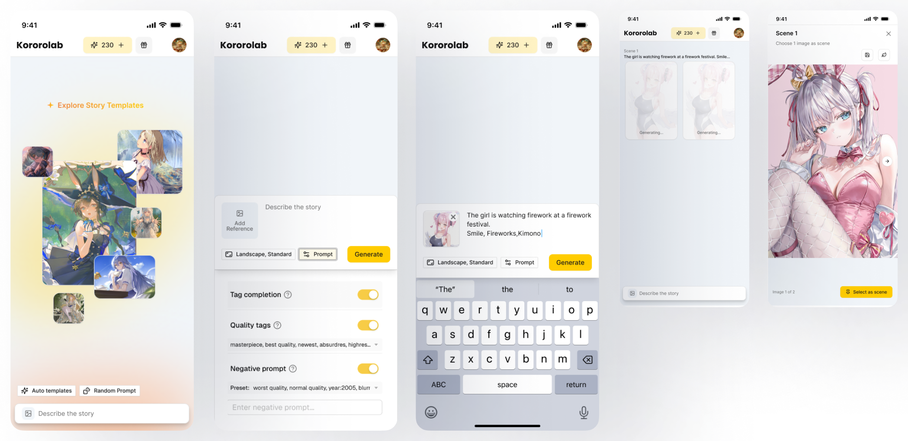

The insight: 差分, not one-off images
Most AI image tools treat every generation as a one-off: you prompt, you get a picture, you start over. But Japanese 2D creator culture has a concept the generic tools ignore — sabun (差分), the practice of creating small variations of a character: same identity, different outfit, expression, or accessory. For dōjin artists and anime fans, the variation is the art form.
Kokorolab is built on the newest AI image-generation technology, in a market segment young enough that direct competitors were still few — which meant the product definition itself had to be invented, not benchmarked. We hammered out the concept together through research and debate, and it landed on two features serving one audience — 2D culture fans, from casual creators to power users:
- The image editor, with two ways to create: generate an image from scratch with a prompt, or make sabun variations of an existing character — the culturally rooted centerpiece.
- Story: upload a character image, then generate scene after scene from prompts — scenes accumulate into a story, and every scene offers multiple image results to choose from.
The product’s promise isn’t “generate an image” — it’s keep the character, change the moment. That one framing decision drove every design choice that followed.
Designing for two fluencies at once
The audience splits into two kinds of users: casual creators who describe what they want in plain language, and power users from the dōjin world who think in the tag vocabulary of image boards. Rather than pick one, the prompt experience offers both modes side by side — natural-language prompting (“making a heart with both hands”) and tag prompting (“heart hands”) — so each audience starts in its own language and produces the same kind of result. It’s progressive disclosure applied to prompting: expertise changes your input style, not your capability.
Story: giving images the context words have
The hardest AI UX problem in image generation is continuity — models forget what your character looks like between generations. Kokorolab’s story feature treats that as the product’s central job. The flow: upload a character image, describe a scene, and generate — the system keeps the character consistent by building on the reference and the generation history. Each scene returns multiple image results; the creator selects one or several, then moves to the next scene. Scene by scene, a story accumulates — 50+ pages can grow from a single starting image.
The design principle behind it: images need context the way words do. A sentence means little without the paragraph around it; a character image means more inside a story. The UI walks creators scene by scene — from sitting on the edge of the bed, to breakfast, to the arcade — with each generation aware of everything before it.

The story-creation flow: describe (or pick a template), attach a reference, generate, and select the scene — with tag completion and quality presets quietly serving both casual and power users along the way.
The only UX in the room — strategy to execution
This is a freelance project, and I am the only UX person on the team. There’s no researcher to brief, no PM to frame the problem, no junior designer to delegate to. Whatever the product needs from design, I do it:
- Research — my own, end to end: studying the market and competitors, digging into creator culture, and reading user behavior after launch to decide what to fix next.
- Product strategy — positioning against generic image generators; the two-feature architecture (image editor with prompt-to-image and variations; story with scene-by-scene generation), shaped collaboratively through research and debate.
- The full UX surface — onboarding, prompting, editing flows, character creation, story building, community and tutorial content.
- Monetization design — a credit-based model with two simple tiers, priced for individuals, with credits that never expire — a deliberate trust choice in a market wary of subscriptions.
- Japanese-first execution — the product leads with Japanese, applying everything my localization research taught me about how Japan reads density, tone, and detail.
Customized Tailwind — pragmatism for a team of one
A one-person design team doesn’t have the luxury of building a design system from scratch — and this product didn’t need one. I leaned on Tailwind’s toolkit and customized its color and typography to carry Kokorolab’s style. Consistency comes from Tailwind’s constraints; identity comes from the customization. Knowing which corners are safe to cut is the skill.
Outcome

The shipped design across web: landing, the story editor, character variants — the sabun promise made visible — and the quick-start gallery that teaches prompting by example.
The product is live, paid, and finding its audience. The early numbers suggest the sabun bet is resonating:
- 52% new-user activation.
- 31% seven-day retention.
- 4.1% free-to-paid conversion.
Why this matters next to my enterprise work
The past six years of my career have been enterprise B2B. Before Oracle, I spent a decade shipping consumer products at IT companies and agencies — so Kokorolab is a precious opportunity to bring those consumer muscles back, and test them in the AI era: delight over density, emotion over compliance, conversion over adoption. Same discipline, refreshed terrain. It keeps me honest about what shipping really takes — and it’s proof that the AI fluency I build in my team is something I practice myself, at product scale.
What I learned
This project ran the entire design chain through my own hands: choosing the brand color, defining the design system, mapping the user flows, and carrying everything to hi-fi mockups for the final product. Shipping it — and watching the live numbers come back healthy — gave me something a manager can quietly lose over the years: confidence as a strong individual contributor. The craft isn’t just still there; it’s sharper.
It also deepened me in ways the day job couldn’t. I now understand AI image models from the inside — how training actually works, and where today’s technology falls short — which changes what I can responsibly design around. I understand the dōjin manga audience far better than any market report could teach. And it honed my interaction design at the detail level: defining an AI image-generation GUI flow that stays simple for a casual creator yet flexible enough for a pro is exactly the kind of problem where every small decision shows.
And the strategic lesson: cultural specificity is a product strategy. Kokorolab doesn’t try to beat the giant generic tools at everything — it wins with an audience the giants don’t see, by taking one culturally rooted behavior seriously. That’s the same lesson my enterprise localization work keeps teaching: the default is not the world.